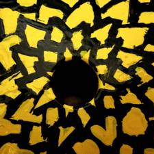
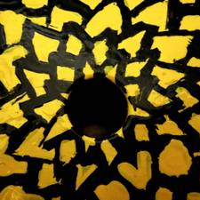

2017 - 2018 / Web Dev & Analysis
Have been studying online using Free Code Camp since 2017 and was selected for the Google Front End Development scholarship in 2018.
Working for a small company my role varies and I have built reporting software with Node on a VPS, helped integrate platforms using APIs and designed a site for a new venture for the company, based on my business proposal.


2011 - 2017 / Content
I started in the "glory days" before Google's Penguin algorithm, writing blogs for Dolphin Music centred around high volume keywords.
Then I became content manager for PMT Online, hiring my own little team of writers to do the blogs & product content while I focused on maintaining a legacy MySQL database, performing SEO audits and assisting an agency in migrating our Magento site.
Most recently I was Head Of International content for The Hut Group. Performing technical SEO analysis on international sites, hiring translators and using the latest enterprise technologies to assist translation at scale. Driving a 300% YOY increase in revenue during the critical Q4 trading period.
 
